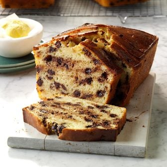

Chocolate Chip Bread
Home

Description
Sweet breads are a fantastic option for breakfast, particularly if you’re hosting overnight guests. Like banana bread or zucchini bread, this chocolate chip bread is both hearty and comforting, and it can be slathered with butter and served with a hot cup of coffee or tea when you don’t have time to cook. We love that it requires just five ingredients to come together, including self-rising flour, which helps make prep and baking that much more efficient.
Ingredients
- Eggs
- Sugar
- Sour cream
- Flour
- Chocolate chips
Steps
- Preheat the oven to 350°F. Beat the eggs, sugar and sour cream until well blended, then gradually stir in the flour. Fold in the chocolate chips, then transfer the batter to a greased 9×5-inch loaf pan.
- Bake the cake until a toothpick inserted in the center comes out clean, 65 to 75 minutes. Let it cool in the pan for 5 to 10 minutes before removing it to a wire rack to cool completely.